pacman::p_load(sf, sfdep, tmap, tidyverse, Kendall)Take-home Exercise 2: Geospatial Analytics for Peace
Local spatial association and emerging hot spots of armed conflict in Myanmar, January 2021 to September 2025
1 Overview
Myanmar has lived with armed conflict since independence in 1948, but the military coup of 1 February 2021 turned a set of long-running ethnic conflicts into a nationwide civil war. Armed resistance spread into the central lowlands, the military answered with air strikes and raids, and millions of people were displaced. For anyone working on humanitarian access or peace-building, the practical questions are where the violence concentrates, whether those concentrations are statistically real, and how they have changed since the coup.
This exercise answers those questions at township level using ACLED event data from 1 January 2021 to 30 September 2025. Following r4gdsa Chapters 8 to 11, two families of methods are used. Local Measures of Spatial Association (LMSA), namely Local Moran’s I and Getis-Ord Gi*, identify townships that form significant hot spots, cold spots or spatial outliers over the whole period. Emerging Hot Spot Analysis (EHSA) then adds time: it computes Gi* for every township in every quarter, tests each township’s series with the Mann-Kendall trend test, and classifies how its hot or cold status has evolved.
2 Research questions and objectives
- Where is armed conflict concentrated across Myanmar’s townships, and which townships stand out from their neighbours (spatial outliers)?
- How has the location and intensity of conflict changed between 2021 and 2025? Which hot spots are new, persistent, intensifying or fading?
- (Value-added) Do battles, explosions and remote violence, and violence against civilians cluster in the same townships, or does each form of violence have its own geography?
The aim is modest. The results describe where and when violence has been recorded. They do not explain why it happens, but they can help peace-building and humanitarian actors decide where attention and resources are most needed.
3 Data and study design
3.1 Data sources
| Dataset | Source | Format | Coverage |
|---|---|---|---|
| ACLED events, Myanmar | Armed Conflict Location & Event Data Project, provided on eLearn | CSV, one row per event | 1 Jan 2021 to 30 Sep 2025 |
| Myanmar Township Boundaries MIMU v9.4 | MIMU GeoNode (layer mmr_polbnda_adm3_250k_mimu_1) |
ESRI shapefile, Admin3 polygons | 330 townships |
ACLED records each event with a date, an event type, the actors involved, a reported fatality count, and coordinates. MIMU provides the official township polygons together with a unique township code (TS_PCODE), which is used as the join key throughout.
3.2 Unit of analysis and variables
The spatial unit is the township (Admin3). The main variable is the number of armed conflict events recorded in each township. The counts for each of the three conflict event types and the total reported fatalities are also kept, so that the analytical data contains several conflict variables, as the task asks.
An event is treated as armed conflict when ACLED classifies it as one of three event types:
- Battles: armed clashes between organised groups;
- Explosions/Remote violence: air and drone strikes, shelling, landmines and IEDs;
- Violence against civilians: attacks, abductions and sexual violence targeting unarmed people.
Protests, riots and “strategic developments” (arrests, looting, troop movements without fighting) are excluded because they are not armed conflict.
3.3 Study area and study period
The study area is the whole of Myanmar, divided into the 330 MIMU townships. The study period is 1 January 2021 to 30 September 2025, which is the full period covered by the ACLED file. For the space-time analysis the period is divided into 19 quarters, from Q1 2021 to Q3 2025. Q1 2021 includes January 2021, one month before the coup, so the first quarter reflects a partly pre-coup situation.
4 Installing and loading R packages
Following Chapters 10 and 11, the packages used are sf, sfdep, tmap, tidyverse and Kendall. Chapter 11 loads Kendall for the Mann-Kendall test.
5 Data preparation and quality assessment
5.1 Township boundaries
The boundaries are projected to UTM zone 47N (EPSG:32647), which covers most of Myanmar and gives distances in metres. The townships are sorted by TS_PCODE straight after import. This looks cosmetic but it is required for EHSA later, and section 6 explains why.
mmr_ts <- st_read(dsn = "data/raw",
layer = "mmr_polbnda_adm3_250k_mimu_1") %>%
st_transform(crs = 32647) %>%
arrange(TS_PCODE)Reading layer `mmr_polbnda_adm3_250k_mimu_1' from data source
`/Users/mengxinyu/ISSS626-GAA/Take-home_Ex/Take-home_Ex02/data/raw'
using driver `ESRI Shapefile'
Simple feature collection with 330 features and 8 fields
Geometry type: MULTIPOLYGON
Dimension: XY
Bounding box: xmin: 92.1721 ymin: 9.605884 xmax: 101.17 ymax: 28.54554
Geodetic CRS: WGS 84glimpse(mmr_ts)Rows: 330
Columns: 9
$ ST <chr> "Kachin", "Kachin", "Kachin", "Kachin", "Kachin", "Kachin", "…
$ ST_PCODE <chr> "MMR001", "MMR001", "MMR001", "MMR001", "MMR001", "MMR001", "…
$ DT <chr> "Myitkyina", "Myitkyina", "Myitkyina", "Myitkyina", "Myitkyin…
$ DT_PCODE <chr> "MMR001D001", "MMR001D001", "MMR001D001", "MMR001D001", "MMR0…
$ TS <chr> "Myitkyina", "Waingmaw", "Injangyang", "Tanai", "Chipwi", "Ts…
$ TS_PCODE <chr> "MMR001001", "MMR001002", "MMR001003", "MMR001004", "MMR00100…
$ TS_MMR <chr> "မြစ်ကြီးနား", "ဝိုင်းမော်", "အင်ဂျန်းယန်", "တနိုင်း", "ချီဖွေ", "ဆော့လော်", "မိုးညှင်း"…
$ PCode_V <dbl> 9.4, 9.4, 9.4, 9.4, 9.4, 9.4, 9.4, 9.4, 9.4, 9.4, 9.4, 9.4, 9…
$ geometry <MULTIPOLYGON [m]> MULTIPOLYGON (((277147.4 27..., MULTIPOLYGON (((…# geometry validity
all(st_is_valid(mmr_ts))[1] TRUE# is the township code unique?
anyDuplicated(mmr_ts$TS_PCODE)[1] 0# are the township names unique?
mmr_ts %>%
st_drop_geometry() %>%
count(TS) %>%
filter(n > 1) TS n
1 Htantabin 2
2 Minhla 2All 330 polygons are valid and every TS_PCODE is unique. The township names are not unique: Htantabin and Minhla each appear twice, in different states and regions. Any join based on township names would attach events to the wrong township, which is the first reason to use the code instead of the name.
5.2 ACLED events
acled_raw <- read_csv("data/raw/ACLED_Data_Myanmar_Jan2021-Sep2025.csv")
dim(acled_raw)[1] 87109 31range(acled_raw$event_date)[1] "2021-01-01" "2025-09-30"acled_raw %>% count(event_type, sort = TRUE)# A tibble: 6 × 2
event_type n
<chr> <int>
1 Explosions/Remote violence 22925
2 Battles 21121
3 Strategic developments 17833
4 Protests 15203
5 Violence against civilians 9958
6 Riots 69acled_raw %>% count(country)# A tibble: 2 × 2
country n
<chr> <int>
1 Indian Ocean 6
2 Myanmar 87103acled_raw %>% count(geo_precision)# A tibble: 3 × 2
geo_precision n
<dbl> <int>
1 1 49261
2 2 37464
3 3 384# missing coordinates, duplicated event ids, missing township names
c(missing_lat = sum(is.na(acled_raw$latitude)),
missing_lon = sum(is.na(acled_raw$longitude)),
dup_event_id = sum(duplicated(acled_raw$event_id_cnty)),
missing_admin3 = sum(is.na(acled_raw$admin3))) missing_lat missing_lon dup_event_id missing_admin3
0 0 0 1118 The file has 87,109 events and covers exactly the study period. There are no missing coordinates and no duplicated event IDs, but four issues need attention:
- only about two thirds of the events are armed conflict;
- a few events are recorded in the “Indian Ocean”, at the centroid of the Bay of Bengal;
geo_precision = 3means ACLED could only place the event in a larger region, so the coordinates are not reliable at township level;- 1,118 events have no township name (
admin3).
5.3 Filtering the events
conflict_types <- c("Battles",
"Explosions/Remote violence",
"Violence against civilians")
acled_step1 <- acled_raw %>% filter(event_type %in% conflict_types)
acled_step2 <- acled_step1 %>% filter(country == "Myanmar")
acled_step3 <- acled_step2 %>% filter(geo_precision %in% c(1, 2))
acled_conflict <- acled_step3 %>%
filter(event_date >= as.Date("2021-01-01"),
event_date <= as.Date("2025-09-30"))
tibble(
step = c("Raw ACLED file",
"Keep armed conflict event types",
"Drop events at sea (Bay of Bengal)",
"Drop low-precision events (geo_precision = 3)",
"Keep events inside the study period"),
events = c(nrow(acled_raw), nrow(acled_step1), nrow(acled_step2),
nrow(acled_step3), nrow(acled_conflict)))# A tibble: 5 × 2
step events
<chr> <int>
1 Raw ACLED file 87109
2 Keep armed conflict event types 54004
3 Drop events at sea (Bay of Bengal) 54000
4 Drop low-precision events (geo_precision = 3) 53907
5 Keep events inside the study period 5390753,907 armed conflict events remain. Dropping the low-precision events removes only 93 records, so it has very little effect on the totals but keeps the township assignment honest.
5.4 Why a spatial join instead of a name join
The obvious way to attach events to townships is to match ACLED’s admin3 to MIMU’s TS. The check below shows why that would fail.
acled_names <- unique(na.omit(acled_conflict$admin3))
mimu_names <- unique(mmr_ts$TS)
# ACLED township names that do not exist in MIMU
setdiff(acled_names, mimu_names)[1] "Dagon Myothit-North" "Hlaingtharya-East" "Dagon Myothit-South"
[4] "Dagon Myothit-East" "Dagon Myothit-Seikkan" "Lay Shi"
[7] "Pangsang" "Hlaingtharya-West" ACLED spells sub-divided townships with a hyphen (Dagon Myothit-East) while MIMU uses brackets (Dagon Myothit (East)), and a few names are transliterated differently (Lay Shi and Layshi). Combined with the duplicated names and the missing admin3 values found above, a name join would silently drop or misplace events. Instead, the events are converted to points and joined to the township polygons by location, which only depends on the coordinates.
5.5 Spatial join
acled_sf <- acled_conflict %>%
st_as_sf(coords = c("longitude", "latitude"), crs = 4326) %>%
st_transform(crs = 32647)
acled_ts <- st_join(acled_sf,
mmr_ts %>% select(TS_PCODE, TS),
join = st_intersects)
# events that fall outside every township polygon
sum(is.na(acled_ts$TS_PCODE))[1] 8offshore <- which(is.na(acled_ts$TS_PCODE))
nearest <- st_nearest_feature(acled_ts[offshore, ], mmr_ts)
tibble(acled_admin3 = acled_ts$admin3[offshore],
location = acled_ts$location[offshore],
nearest_ts = mmr_ts$TS[nearest],
distance_m = round(as.numeric(
st_distance(acled_ts[offshore, ], mmr_ts[nearest, ],
by_element = TRUE))))# A tibble: 8 × 4
acled_admin3 location nearest_ts distance_m
<chr> <chr> <chr> <dbl>
1 Buthidaung Wa Ra Kyun Buthidaung 8
2 Bokpyin Ma Thay Bokpyin 488
3 Myawaddy Me Ka Lar Myawaddy 260
4 Myawaddy Me Ka Lar Myawaddy 260
5 Myawaddy Me Ka Lar Myawaddy 260
6 Kyunsu Kawt Ka Nin Kyunsu 485
7 Buthidaung Wa Ra Kyun Buthidaung 8
8 Pauktaw Ku La Thein Pauktaw 7Only 8 events fall outside every polygon. They are real events on small islands or the coastline, all within about 500 m of a township boundary, and the nearest township matches the township name that ACLED itself recorded. The mismatch comes from the generalised (1:250,000) coastline in the boundary file, so these events are assigned to their nearest township rather than dropped.
acled_ts$TS_PCODE[offshore] <- mmr_ts$TS_PCODE[nearest]
acled_ts$TS[offshore] <- mmr_ts$TS[nearest]
# how often does the spatial join agree with ACLED's own township name?
mean(acled_ts$admin3 == acled_ts$TS, na.rm = TRUE)[1] 0.9901496The spatial join agrees with ACLED’s own township name for 99% of the events that have a name. Almost all of the remaining cases are the spelling differences shown above, which confirms that the join is sound.
5.6 Township-level analytical data
conflict_by_type <- acled_ts %>%
st_drop_geometry() %>%
mutate(type = recode(event_type,
"Battles" = "battles",
"Explosions/Remote violence" = "explosions",
"Violence against civilians" = "vac")) %>%
count(TS_PCODE, type) %>%
pivot_wider(names_from = type, values_from = n, values_fill = 0)
fatal_by_ts <- acled_ts %>%
st_drop_geometry() %>%
group_by(TS_PCODE) %>%
summarise(fatalities = sum(fatalities))
mmr_conflict <- mmr_ts %>%
left_join(conflict_by_type, by = "TS_PCODE") %>%
left_join(fatal_by_ts, by = "TS_PCODE") %>%
mutate(across(c(battles, explosions, vac, fatalities),
~ replace_na(.x, 0)),
events = battles + explosions + vac)
summary(mmr_conflict$events) Min. 1st Qu. Median Mean 3rd Qu. Max.
0.0 24.0 79.0 163.4 214.0 1039.0 sum(mmr_conflict$events == 0)[1] 8Townships with no recorded conflict are kept with a count of zero instead of being dropped. A zero is meaningful information for both LMSA and EHSA, and removing those townships would also break the neighbour structure.
5.7 Quarterly space-time cube
EHSA needs a space-time cube: one row for every township in every time period, with no gaps. Events are counted by township and quarter, and combinations with no events are filled with zero.
acled_ts <- acled_ts %>%
mutate(quarter = floor_date(event_date, "quarter"))
all_quarters <- sort(unique(acled_ts$quarter))
length(all_quarters)[1] 19conflict_q <- acled_ts %>%
st_drop_geometry() %>%
count(TS_PCODE, quarter, name = "events") %>%
complete(TS_PCODE = mmr_ts$TS_PCODE,
quarter = all_quarters,
fill = list(events = 0))
nrow(conflict_q)[1] 6270conflict_st <- spacetime(conflict_q, mmr_ts,
.loc_col = "TS_PCODE",
.time_col = "quarter")
is_spacetime_cube(conflict_st)[1] TRUEThe cube has 330 townships times 19 quarters, which gives 6,270 rows, and is_spacetime_cube() confirms it is valid.
6 Analytical assumptions and methodological decisions
6.1 Coordinate reference system
EPSG:32647 (UTM 47N) is used for all geometry, so that neighbour searches and distances are in metres rather than degrees.
6.2 Spatial weights
Chapter 10 uses Queen contiguity (st_contiguity()) for Local Moran’s I and adaptive weights with 6 nearest neighbours (st_knn(k = 6)) as one of its options for Gi*. Contiguity does not work for Myanmar, because three townships are islands with no land neighbours.
nb_queen <- st_contiguity(mmr_ts)
isolated <- which(map_lgl(nb_queen, ~ all(.x == 0L)))
mmr_ts$TS[isolated][1] "Chaungzon" "Munaung" "Cocokyun" summary(lengths(nb_queen[-isolated])) Min. 1st Qu. Median Mean 3rd Qu. Max.
1.000 4.000 5.000 5.248 6.000 11.000 Under contiguity these townships would have no neighbours at all, and their local statistics could not be computed. The adaptive weights from Chapter 10 are therefore used for every analysis: the 6 nearest neighbours of each township (st_knn(k = 6)), row-standardised (style = "W"). Six is close to the median number of contiguity neighbours, so the neighbourhood size stays comparable while every township, including the islands, gets neighbours. Section 11 checks that the main results do not depend on this choice of k. For Gi*, the township itself is included in its own neighbourhood (include_self()), as in Chapter 10.
6.3 Variable
The analysis uses raw event counts. Townships differ a lot in area and population, and larger townships may record more events simply because they are larger. There is no reliable township population for the conflict period (displacement has been massive), so counts are kept and this is treated as a limitation.
6.4 Significance testing
Chapter 10 classifies LISA clusters with the analytical p-value p_ii, and Gi* hot and cold spots with the simulated p-value p_sim. Here the counts are heavily right-skewed (a few townships have over 900 events, the median is under 100). The analytical p-value of Local Moran’s I (p_ii) assumes approximate normality, which is not reasonable here. The permutation p-values (p_ii_sim and p_sim) are therefore used for both, based on 999 conditional permutations, with a significance level of 0.05. Section 8.3 shows how much the choice matters. A random seed is set before every simulation so the results are reproducible.
6.5 Hot and cold spots from Gi*
Chapter 10 labels hot and cold spots from the cluster column returned by local_gstar_perm(). However, this column labels a township “High” or “Low” based on its own value compared with the mean, not on the sign of Gi*. A township with few events surrounded by heavy conflict therefore gets a positive Gi* but the label “Low”. Hot and cold spots are therefore classified by the sign of Gi* instead, which matches the definition of a hot spot.
6.6 Time interval for EHSA
Chapter 11 works with yearly data. With only five years here, a yearly series would be too short for the Mann-Kendall test, so quarters are used rather than months. A monthly cube would have 57 periods but about half of all township-months have no events at all, while the quarterly cube has 19 periods and far fewer empty cells. Nineteen observations are enough for the Mann-Kendall test, and quarters smooth out some of the reporting noise in month-to-month counts.
6.7 EHSA parameters
Following Chapter 11, emerging_hotspot_analysis() is run with k = 1 and nsim = 99. It is given the same 6-nearest-neighbour weights (passed through nb_col and wt_col), because the contiguity weights that the function builds by default would leave the three islands without neighbours. sfdep treats a township as a significant hot or cold spot in a given quarter when the simulated Gi* p-value is at most 0.01, and uses those quarter-by-quarter results together with the Mann-Kendall trend to assign the EHSA category. With 99 simulations 0.01 is also the smallest p-value possible, so borderline townships can change category between runs. EHSA is therefore run five times with different random seeds, and each township takes its most frequent category (section 9.3).
6.8 Ordering of the space-time cube
Chapter 11 warns that the row order must not change once the neighbours are set. A related problem appears here. emerging_hotspot_analysis() attaches township labels to its results in the order of the boundary file, but splits the results in alphabetical order of the location code. If the two orders differ, the classes are attached to the wrong townships without any warning. The MIMU file is not sorted by TS_PCODE. When EHSA was run on the unsorted file, Monywa, the township with the most conflict events in the country, came out as a “consecutive coldspot”. After sorting it came out as a hot spot. Sorting the boundaries by TS_PCODE at import (section 5.1) avoids the problem.
7 Geovisualisation of armed conflict
7.1 Where conflict was recorded
tmap_mode("plot")
tm_shape(mmr_conflict) +
tm_polygons(fill = "events",
fill.scale = tm_scale_intervals(
breaks = c(0, 1, 25, 100, 250, 500, 1100),
values = "brewer.or_rd"),
fill.legend = tm_legend(
title = "Conflict events",
position = tm_pos_out("right", "center")),
col = "grey60", lwd = 0.3) +
tm_title("Armed conflict events by township, Jan 2021 to Sep 2025")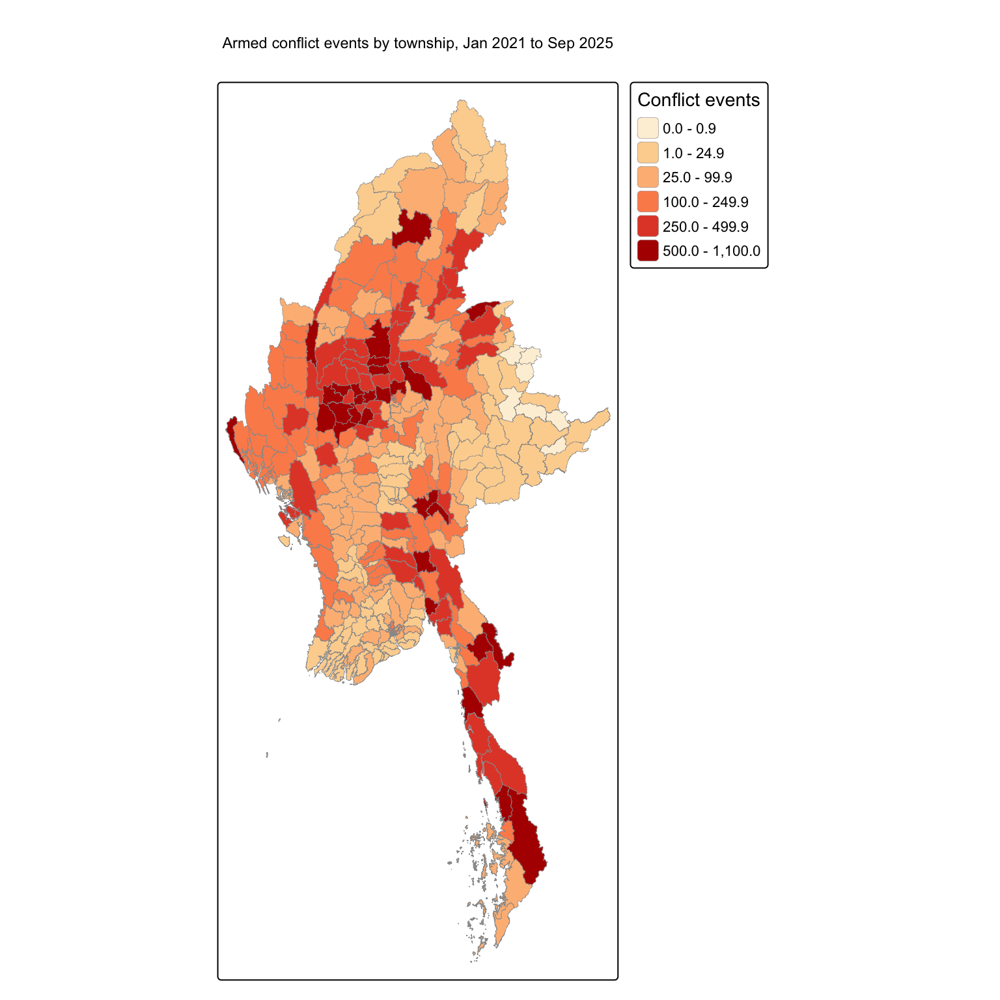
mmr_conflict %>%
st_drop_geometry() %>%
arrange(desc(events)) %>%
select(ST, TS, events, fatalities) %>%
head(10) ST TS events fatalities
1 Sagaing Monywa 1039 1771
2 Kayin Kawkareik 946 1524
3 Magway Myaing 934 1419
4 Sagaing Kale 886 1877
5 Kachin Hpakant 854 1262
6 Sagaing Shwebo 806 1551
7 Mandalay Madaya 789 1117
8 Shan (North) Nawnghkio 788 465
9 Bago (East) Kyaukkyi 777 705
10 Magway Yesagyo 760 1434Conflict is spread across almost the whole country: only 8 of 330 townships recorded no armed conflict event in nearly five years. The heaviest concentration is in the central Dry Zone, across Sagaing, Magway and Mandalay, where Monywa, Myaing, Shwebo and Yesagyo each recorded more than 750 events. This is the Bamar-majority heartland, which had little armed conflict before 2021, so its position at the top of the list shows how the coup changed the geography of the war. A second band of high counts runs down the south-east, through Kayin and Tanintharyi, and there are further pockets in Kachin and northern Shan.
The lightest areas are the Ayeyarwady delta, central Yangon, the Nay Pyi Taw union territory and eastern Shan. The map shows recorded events, not underlying risk. Remote and contested areas may be under-reported, and large townships can accumulate more events simply because of their size.
7.2 Different forms of violence
type_map <- function(var, title) {
tm_shape(mmr_conflict) +
tm_polygons(fill = var,
fill.scale = tm_scale_intervals(
style = "jenks", n = 5,
values = "brewer.or_rd"),
fill.legend = tm_legend(
title = "Events",
position = tm_pos_in("left", "bottom")),
col = "grey60", lwd = 0.3) +
tm_title(title, size = 0.9)
}
tmap_arrange(type_map("battles", "Battles"),
type_map("explosions", "Explosions / remote violence"),
type_map("vac", "Violence against civilians"),
type_map("fatalities", "Reported fatalities"),
ncol = 4)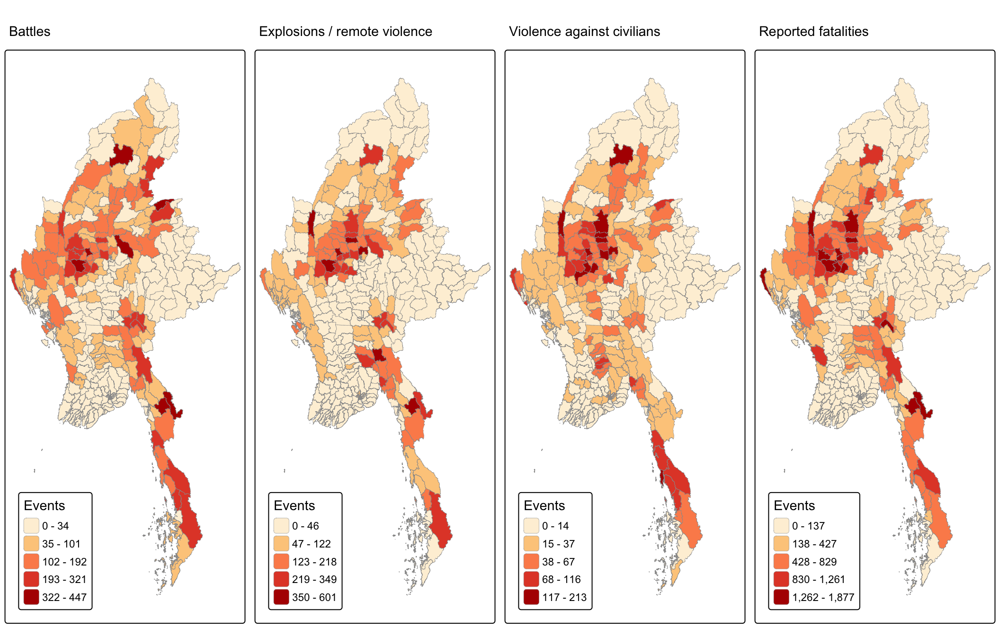
The three event types share the same broad footprint, but there are visible differences. Battles are more evenly spread and reach further into the ethnic borderlands of Kachin, Chin, Kayah and Kayin, where armed organisations hold territory. Explosions and remote violence, mostly air and drone strikes, shelling and landmines, are concentrated in the Dry Zone and in Kayin. Violence against civilians is darkest in Sagaing and the neighbouring parts of Mandalay and Magway, with further concentrations in Hpakant in Kachin and along the Tanintharyi coast around Dawei. Reported fatalities follow the battle pattern but also pick out Maungdaw in northern Rakhine, which has one of the highest death tolls in the country.
Section 10 tests these impressions formally. ACLED fatality figures are based on media and partner reports and are often rounded or estimated, so they are less reliable than the event counts.
7.3 How conflict changed over time
acled_ts %>%
st_drop_geometry() %>%
count(quarter, event_type) %>%
ggplot(aes(x = quarter, y = n, fill = event_type)) +
geom_col() +
scale_fill_manual(values = c("Battles" = "#b2182b",
"Explosions/Remote violence" = "#ef8a62",
"Violence against civilians" = "#67a9cf")) +
labs(x = NULL, y = "Conflict events per quarter", fill = NULL,
title = "Armed conflict events in Myanmar by quarter") +
theme_minimal() +
theme(legend.position = "bottom")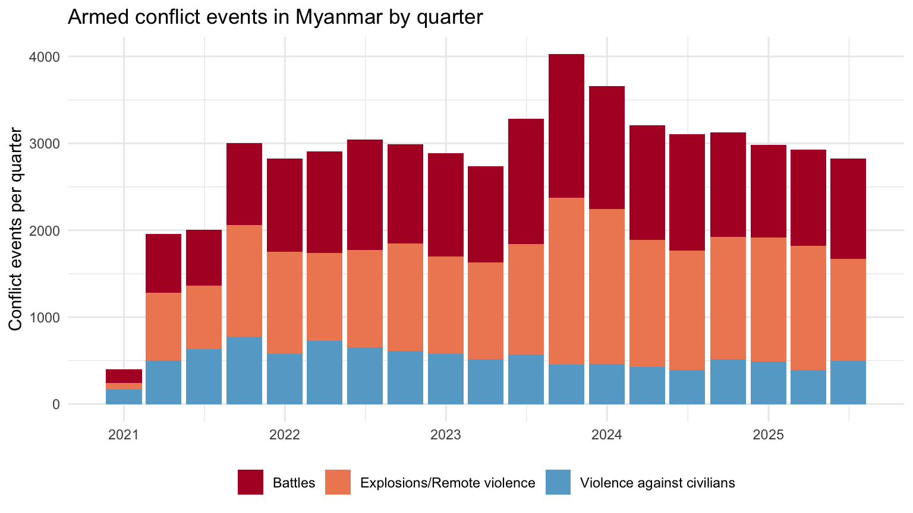
Recorded conflict jumped from a few hundred events in Q1 2021 to about 3,000 per quarter by the end of 2021, after the coup and the move from protest to armed resistance. It then stayed at roughly that level for four years, which suggests an entrenched war rather than a short crisis. The highest quarter is Q4 2023, which coincides with the start of the “Operation 1027” offensive in northern Shan and the renewed fighting in Rakhine. The mix of violence has also shifted. Explosions and remote violence grew from about 39% of events in 2021 to about 46% in 2024 and 2025, while violence against civilians fell from 28% to around 15% of the total. This is consistent with a war increasingly fought through air strikes and shelling. The chart counts events, not deaths, so a rising share of remote violence does not by itself mean more casualties.
conflict_year <- acled_ts %>%
st_drop_geometry() %>%
mutate(year = year(event_date)) %>%
count(TS_PCODE, year, name = "events") %>%
complete(TS_PCODE = mmr_ts$TS_PCODE, year = 2021:2025,
fill = list(events = 0))
mmr_year <- mmr_ts %>%
select(TS_PCODE) %>%
left_join(conflict_year, by = "TS_PCODE")
tm_shape(mmr_year) +
tm_polygons(fill = "events",
fill.scale = tm_scale_intervals(
breaks = c(0, 1, 10, 50, 100, 200, 400),
values = "brewer.or_rd"),
fill.legend = tm_legend(title = "Events per year"),
col = "grey60", lwd = 0.2) +
tm_facets_wrap(by = "year", nrow = 1)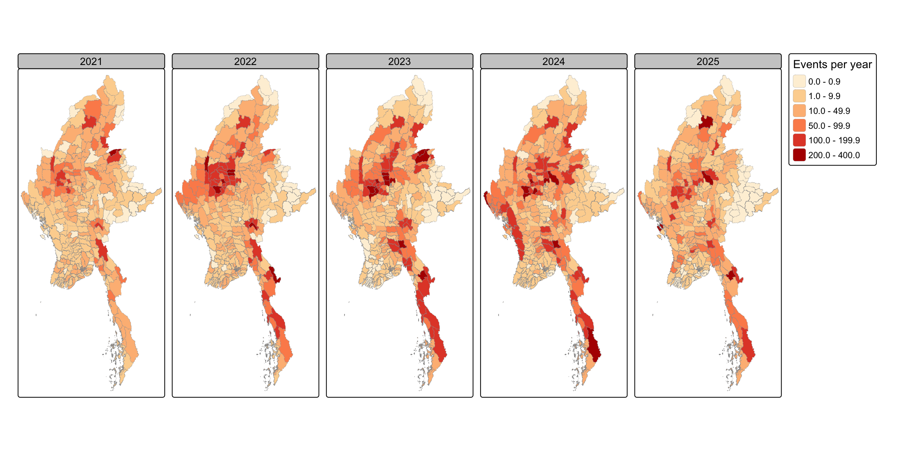
Mapping each year separately shows the conflict moving. In 2021 events are spread widely at low to moderate levels, with darker patches in Sagaing, Kachin, northern Shan and Kayin. Yangon’s townships are too small to see at this scale, but Yangon accounted for about 12% of all conflict events in 2021, mostly small bombings and targeted killings after the coup, and only a few per cent from 2023 onwards. Sagaing becomes the centre of the war in 2022 and 2023, with about a third of all events in 2022. From late 2023 the darker shades spread outward: northern Shan and Rakhine light up, and by 2024 Rakhine is the second most violent state after Sagaing. By 2025 Sagaing’s share has fallen to about 15%, not because the Dry Zone is calm but because conflict has spread to more fronts. The year 2025 covers only nine months, so its colours are slightly lighter by construction.
8 Local Measures of Spatial Association
8.1 Spatial weights
wm_knn <- mmr_conflict %>%
mutate(nb = st_knn(geometry, k = 6),
wt = st_weights(nb, style = "W"),
.before = 1)
summary(lengths(wm_knn$nb)) Min. 1st Qu. Median Mean 3rd Qu. Max.
6 6 6 6 6 6 8.2 Global Moran’s I
Following Chapter 9, the first step is to check whether conflict is spatially autocorrelated at all. Chapter 9 uses spdep’s moran.mc(); here the sfdep equivalent global_moran_perm() is used so that the whole analysis stays in one package, with the same 999 permutations.
set.seed(1234)
gm <- global_moran_perm(wm_knn$events, wm_knn$nb, wm_knn$wt, nsim = 999)
gm
Monte-Carlo simulation of Moran I
data: x
weights: listw
number of simulations + 1: 1000
statistic = 0.44518, observed rank = 1000, p-value < 2.2e-16
alternative hypothesis: two.sidedGlobal Moran’s I is 0.445 with a permutation p-value below 0.001. The null hypothesis of spatial randomness is rejected: townships with many conflict events tend to sit next to other townships with many events. The global statistic says that clustering exists but not where, which is what the local measures are for.
8.3 Local Moran’s I
set.seed(1234)
lisa <- wm_knn %>%
mutate(local_moran = local_moran(events, nb, wt, nsim = 999),
.before = 1) %>%
unnest(local_moran)ii_map <- tm_shape(lisa) +
tm_polygons(fill = "ii",
fill.scale = tm_scale_intervals(
style = "pretty", n = 6,
values = "brewer.rd_bu", midpoint = 0),
fill.legend = tm_legend(
title = "Local Moran's I",
position = tm_pos_in("left", "bottom")),
col = "grey60", lwd = 0.3) +
tm_title("Local Moran's I of conflict events")
p_map <- tm_shape(lisa) +
tm_polygons(fill = "p_ii_sim",
fill.scale = tm_scale_intervals(
breaks = c(0, 0.001, 0.01, 0.05, 1),
values = "-brewer.reds"),
fill.legend = tm_legend(
title = "Simulated p-value",
position = tm_pos_in("left", "bottom")),
col = "grey60", lwd = 0.3) +
tm_title("Permutation p-values (999 simulations)")
tmap_arrange(ii_map, p_map, ncol = 2)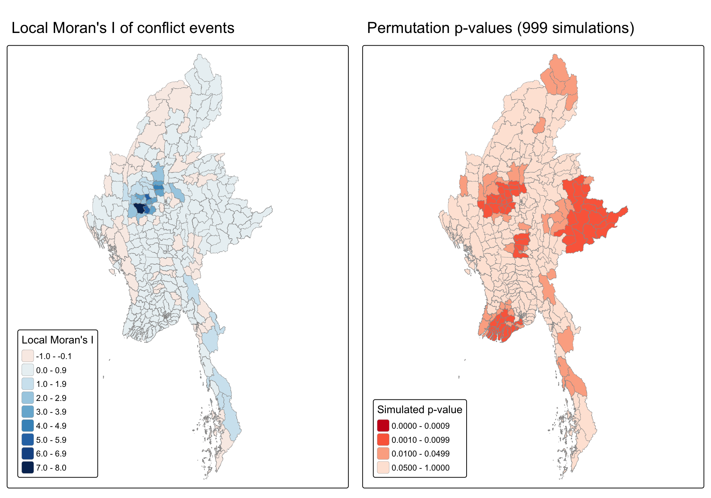
The left map shows the local statistic itself. Positive values (blue) mean a township resembles its neighbours, either high among high or low among low. Negative values (red) mean it differs from them. The right map shows which of these values are statistically significant. The two maps must be read together, which is why the LISA cluster map below combines them.
lisa <- lisa %>%
mutate(LISA_cluster = if_else(p_ii_sim < 0.05,
as.character(mean),
"Insignificant"),
LISA_cluster = factor(LISA_cluster,
levels = c("Insignificant", "Low-Low",
"Low-High", "High-Low",
"High-High")))
lisa %>% st_drop_geometry() %>% count(LISA_cluster)# A tibble: 4 × 2
LISA_cluster n
<fct> <int>
1 Insignificant 219
2 Low-Low 74
3 Low-High 3
4 High-High 34Chapter 10 builds the cluster classes from the analytical p-value p_ii. The table below compares the classes that p_ii would give with the ones from the permutation p-value p_ii_sim used here.
p_compare <- lisa %>%
st_drop_geometry() %>%
mutate(with_p_ii = if_else(p_ii < 0.05, as.character(mean), "Insignificant"),
with_p_ii_sim = as.character(LISA_cluster))
p_compare %>%
pivot_longer(c(with_p_ii, with_p_ii_sim),
names_to = "p_value", values_to = "class") %>%
count(p_value, class) %>%
pivot_wider(names_from = class, values_from = n, values_fill = 0)# A tibble: 2 × 5
p_value `High-High` Insignificant `Low-High` `Low-Low`
<chr> <int> <int> <int> <int>
1 with_p_ii 42 275 9 4
2 with_p_ii_sim 34 219 3 74# High-High townships found by both p-values
sum(p_compare$with_p_ii == "High-High" & p_compare$with_p_ii_sim == "High-High")[1] 34The analytical p_ii gives 42 High-High townships and the permutation p_ii_sim gives 34, and 34 townships are High-High under both, so the hot cluster is found either way. The big difference is in the quiet areas: p_ii finds only 4 Low-Low townships against 74 with p_ii_sim. With skewed counts, a township with few events among quiet neighbours has only a small positive local Moran’s I, and the normal approximation behind p_ii rarely calls it significant. The permutation test compares each township with its own simulated distribution instead, so it also picks up the quiet delta and eastern Shan. The main finding, a Dry Zone cluster and a smaller south-eastern one, does not depend on this choice.
tm_shape(lisa) +
tm_polygons(fill = "LISA_cluster",
fill.scale = tm_scale_categorical(
values = c("grey90", "#2c7bb6", "#abd9e9",
"#fdae61", "#d7191c"),
levels.drop = FALSE),
fill.legend = tm_legend(
title = "LISA cluster (p < 0.05)",
position = tm_pos_out("right", "center")),
col = "grey60", lwd = 0.3) +
tm_title("Local Moran's I clusters of armed conflict events")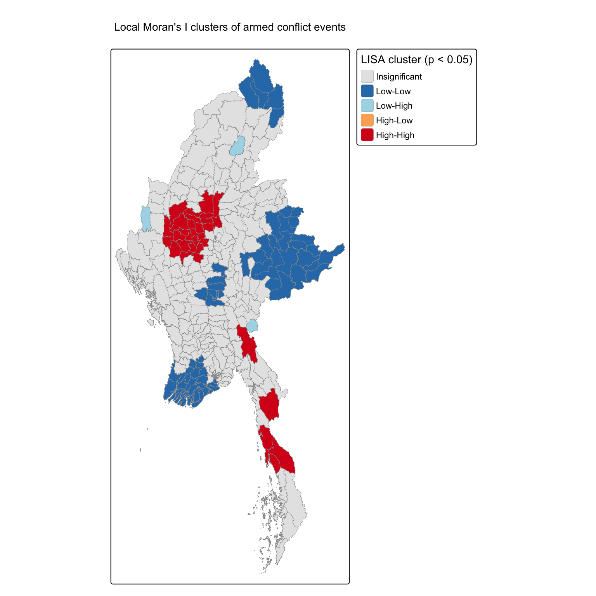
lisa %>%
st_drop_geometry() %>%
filter(LISA_cluster %in% c("High-High", "Low-High", "High-Low")) %>%
select(ST, TS, events, LISA_cluster) %>%
arrange(LISA_cluster, desc(events))# A tibble: 37 × 4
ST TS events LISA_cluster
<chr> <chr> <int> <fct>
1 Chin Thantlang 116 Low-High
2 Kachin Mogaung 77 Low-High
3 Kayah Mese 27 Low-High
4 Sagaing Monywa 1039 High-High
5 Magway Myaing 934 High-High
6 Sagaing Shwebo 806 High-High
7 Magway Yesagyo 760 High-High
8 Magway Pakokku 731 High-High
9 Mandalay Myingyan 652 High-High
10 Sagaing Khin-U 582 High-High
# ℹ 27 more rows34 townships form significant High-High clusters, places with heavy conflict surrounded by heavy conflict. Most are in a single continuous block in the Dry Zone, across Sagaing (Monywa, Shwebo, Khin-U, Kanbalu, Myinmu and others), Magway (Myaing, Yesagyo, Pakokku, Pauk, Gangaw) and western Mandalay (Myingyan). A smaller High-High cluster appears in the south-east, across Kayin (Hpapun, Kyainseikgyi) and Tanintharyi (Dawei, Launglon, Yebyu, Thayetchaung).
74 townships are Low-Low: the Ayeyarwady delta, central Yangon, Nay Pyi Taw, southern and eastern Shan including the Wa and Mongla areas, and the far north of Kachin around Puta-O. These are places where violence was low and the surrounding townships were also quiet.
The 3 Low-High outliers (Mogaung in Kachin, Mese in Kayah, Thantlang in Chin) recorded relatively few events while their neighbours were in heavy conflict. They sit on the edges of the Chin, Kachin and Kayah fronts, and may be places that armed groups pass through rather than fight over. No township is a significant High-Low outlier, which means intense conflict almost never occurs in isolation.
Because these results come from random permutations, Local Moran’s I is re-run with three other random seeds and the classes are compared.
lisa_agree <- map_dbl(c(1, 2, 3), function(s) {
set.seed(s)
res <- local_moran(wm_knn$events, wm_knn$nb, wm_knn$wt, nsim = 999)
cls <- if_else(res$p_ii_sim < 0.05, as.character(res$mean), "Insignificant")
mean(cls == as.character(lisa$LISA_cluster))
})
lisa_agree[1] 0.9727273 0.9818182 0.9757576Between 97% and 98% of townships kept the same LISA class, so the clusters described here do not depend on the random seed.
8.4 Getis-Ord Gi* hot and cold spots
Local Moran’s I separates clusters from outliers. Gi* answers a simpler question: is a township and its neighbourhood together significantly above (hot) or below (cold) the national average?
wm_gi <- mmr_conflict %>%
mutate(nb = include_self(st_knn(geometry, k = 6)),
wt = st_weights(nb, style = "W"),
.before = 1)
set.seed(1234)
hcsa <- wm_gi %>%
mutate(gistar = local_gstar_perm(events, nb, wt, nsim = 999),
.before = 1) %>%
unnest(gistar)
hcsa <- hcsa %>%
mutate(HCSA_cluster = case_when(
p_sim > 0.05 ~ "Insignificant",
gi_star > 0 ~ "Hot spot",
gi_star < 0 ~ "Cold spot"),
HCSA_cluster = factor(HCSA_cluster,
levels = c("Insignificant",
"Hot spot", "Cold spot")))
# how often does sfdep's own "cluster" label disagree with the sign of Gi*?
hcsa %>%
st_drop_geometry() %>%
filter(p_sim <= 0.05) %>%
count(HCSA_cluster, cluster)# A tibble: 3 × 3
HCSA_cluster cluster n
<fct> <fct> <int>
1 Hot spot Low 4
2 Hot spot High 35
3 Cold spot Low 75The cross-tabulation shows the problem described in section 6: a few significant townships with a positive Gi* (hot spots) carry the label “Low” in sfdep’s cluster column, because their own count is below the mean even though their neighbourhood is in heavy conflict. Classifying by the sign of Gi* puts them correctly among the hot spots.
gi_map <- tm_shape(hcsa) +
tm_polygons(fill = "gi_star",
fill.scale = tm_scale_intervals(
style = "pretty", n = 6,
values = "-brewer.rd_bu", midpoint = 0),
fill.legend = tm_legend(
title = "Gi*",
position = tm_pos_in("left", "bottom")),
col = "grey60", lwd = 0.3) +
tm_title("Local Gi* of conflict events")
hcsa_map <- tm_shape(hcsa) +
tm_polygons(fill = "HCSA_cluster",
fill.scale = tm_scale_categorical(
values = c("grey90", "#d7191c", "#2c7bb6"),
levels.drop = FALSE),
fill.legend = tm_legend(
title = "Gi* (p < 0.05)",
position = tm_pos_in("left", "bottom")),
col = "grey60", lwd = 0.3) +
tm_title("Hot and cold spots of armed conflict")
tmap_arrange(gi_map, hcsa_map, ncol = 2)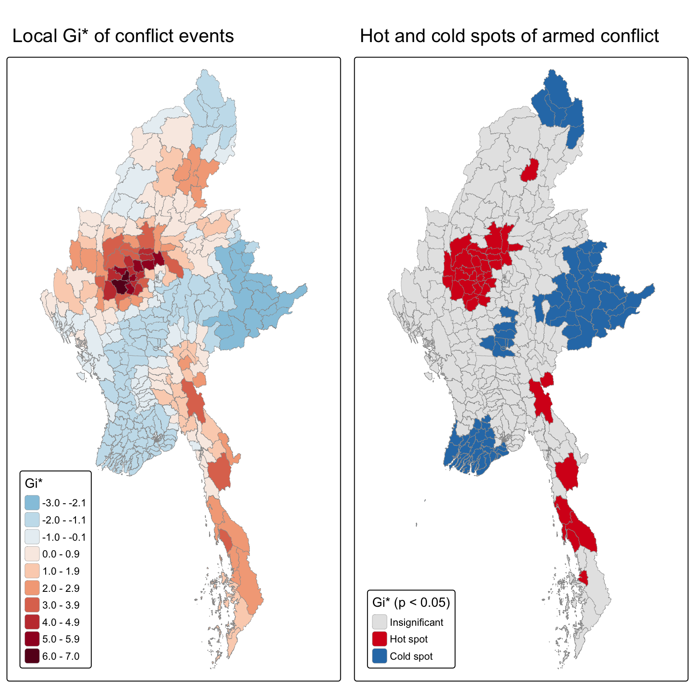
39 townships are significant hot spots and 75 are significant cold spots. The hot spots confirm the Local Moran’s I result. The strongest values are in the Sagaing and Magway Dry Zone (Salingyi, Myaing, Singu and Yesagyo all have Gi* above 5), extending north-east into Mogoke and Thabeikkyin in Mandalay, with a second, weaker group in Kayin and Tanintharyi. The cold spots cover the Ayeyarwady delta, Yangon, Nay Pyi Taw, most of southern and eastern Shan, and the far north of Kachin.
Gi* adds two things to the LISA map. First, it ranks the hot spots by strength, which Local Moran’s I does not. Second, it treats each township together with its neighbourhood. Townships such as Mogaung and Mese, which were Low-High outliers under Local Moran’s I, become hot spots under Gi*: they are quieter than their neighbours, but the area they sit in is clearly part of a conflict zone.
9 Emerging Hot Spot Analysis
9.1 Spatial weights for the space-time cube
The neighbours are attached to the geometry part of the cube and then copied to every time slice with set_nbs() and set_wts().
conflict_nb <- conflict_st %>%
activate("geometry") %>%
mutate(nb = include_self(st_knn(geometry, k = 6)),
wt = st_weights(nb, style = "W"),
.before = 1) %>%
set_nbs("nb") %>%
set_wts("wt")9.2 Gi* for each quarter and the Mann-Kendall test
set.seed(1234)
gi_stars <- conflict_nb %>%
group_by(quarter) %>%
mutate(gi_star = local_gstar_perm(events, nb, wt, nsim = 99)) %>%
unnest(gi_star)Following Chapter 11, which first shows the Mann-Kendall test for a single location, the quarterly Gi* series is plotted for two contrasting townships: Monywa, the most conflict-affected township in Sagaing, and Bahan, a central Yangon township.
examples <- mmr_ts %>%
st_drop_geometry() %>%
filter(TS %in% c("Monywa", "Bahan")) %>%
select(TS_PCODE, TS)
gi_stars %>%
ungroup() %>%
inner_join(examples, by = "TS_PCODE") %>%
ggplot(aes(x = quarter, y = gi_star, colour = TS)) +
geom_hline(yintercept = 0, linetype = "dashed", colour = "grey50") +
geom_line(linewidth = 0.9) +
geom_point(size = 1.5) +
scale_colour_manual(values = c("Monywa" = "#d7191c",
"Bahan" = "#2c7bb6")) +
labs(x = NULL, y = "Gi*", colour = NULL,
title = "Quarterly Gi* for two contrasting townships") +
theme_minimal()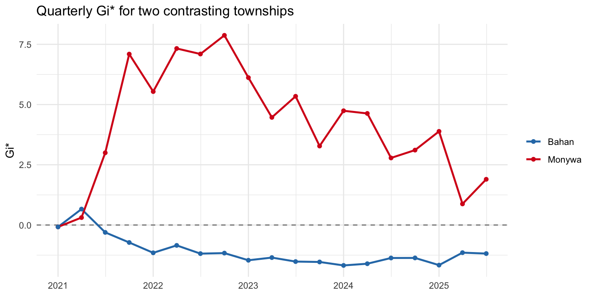
mk_examples <- gi_stars %>%
ungroup() %>%
inner_join(examples, by = "TS_PCODE") %>%
group_by(TS) %>%
summarise(mk = list(unclass(Kendall::MannKendall(gi_star)))) %>%
unnest_wider(mk) %>%
select(TS, tau, sl)
mk_examples# A tibble: 2 × 3
TS tau sl
<chr> <dbl> <dbl>
1 Bahan -0.544 0.00129
2 Monywa -0.216 0.208 The null hypothesis of the Mann-Kendall test is that the series has no monotonic trend. Monywa’s Gi* rose sharply in 2021, peaked in 2022 at around 7 to 8, and then drifted down while staying above zero. Because the low values of early 2021 and the lower values of 2025 sit at both ends of the series, the test finds no significant overall trend (tau = -0.22, p = 0.21). Bahan was slightly above zero in Q2 2021 and then fell below zero and stayed there, which gives a significant negative trend (tau = -0.54, p = 0.0013).
Chapter 11 then applies the test to every location and sorts the results by significance. The same is done here for all 330 townships.
mk_all <- gi_stars %>%
ungroup() %>%
group_by(TS_PCODE) %>%
summarise(mk = list(unclass(Kendall::MannKendall(gi_star)))) %>%
unnest_wider(mk) %>%
left_join(mmr_ts %>% st_drop_geometry() %>% select(TS_PCODE, ST, TS),
by = "TS_PCODE")
mk_all %>%
arrange(sl, abs(tau)) %>%
select(ST, TS, tau, sl) %>%
slice(1:10)# A tibble: 10 × 4
ST TS tau sl
<chr> <chr> <dbl> <dbl>
1 Magway Salin 0.789 0.00000274
2 Bago (West) Okpho 0.766 0.00000536
3 Bago (West) Gyobingauk 0.743 0.0000104
4 Mandalay Amarapura -0.743 0.0000104
5 Mandalay Natogyi 0.731 0.0000143
6 Mandalay Sintgaing -0.731 0.0000144
7 Bago (West) Minhla 0.719 0.0000197
8 Bago (West) Letpadan 0.708 0.0000269
9 Mandalay Chanayethazan -0.696 0.0000365
10 Bago (West) Paukkhaung 0.696 0.0000366 mk_all %>%
summarise(rising = sum(sl < 0.05 & tau > 0),
falling = sum(sl < 0.05 & tau < 0),
no_trend = sum(sl >= 0.05))# A tibble: 1 × 3
rising falling no_trend
<int> <int> <int>
1 53 81 19653 townships have a significant rising trend in Gi* and 81 a significant falling trend. Falling trends are more common overall, as conflict spread away from the places where it was first prominent. The ten most significant trends, however, are mostly rising. Most are in Bago (West), together with Salin in Magway and Natogyi in Mandalay, townships that were quiet in 2021 and moved closer to the fighting later. The strongly falling ones in the top ten are around Mandalay city, such as Amarapura and Sintgaing.
One point matters for reading every trend in this section. Gi* compares a neighbourhood with the national picture in the same quarter. A negative trend therefore means a township has become less prominent relative to the rest of the country, not necessarily that it records fewer events. Monywa’s decline after 2022 reflects conflict spreading to other regions as much as any calm in Monywa itself.
9.3 EHSA classification
emerging_hotspot_analysis() decides whether a township is a significant hot or cold spot in each quarter from conditional permutations, and counts it as significant when the simulated p-value is at most 0.01. With 99 simulations, as in the course, the smallest possible p-value is exactly 1 / (99 + 1) = 0.01. A township is therefore significant only when its observed Gi* is more extreme than all 99 simulated values, and a single simulated value beyond it makes the quarter insignificant. Townships close to this limit can switch category from one run to the next. This was checked by running EHSA with five different random seeds and comparing the results. Each township is then given the category it received most often, and the share of runs that agree is kept as a measure of stability.
seeds <- c(1234, 2021, 2022, 2023, 2024)
ehsa_runs <- map_dfr(seeds, function(s) {
set.seed(s)
emerging_hotspot_analysis(x = conflict_nb,
.var = "events",
k = 1,
nsim = 99,
nb_col = "nb",
wt_col = "wt") %>%
mutate(seed = s)
})# the Mann-Kendall result depends only on the Gi* values, so it is the
# same in every run; check this before combining the runs
ehsa_runs %>%
group_by(location) %>%
summarise(n_distinct_p = n_distinct(round(p_value, 10))) %>%
count(n_distinct_p)# A tibble: 1 × 2
n_distinct_p n
<int> <int>
1 1 330# agreement must be computed before classification is overwritten
ehsa <- ehsa_runs %>%
group_by(location) %>%
summarise(tau = first(tau),
p_value = first(p_value),
agreement = max(table(classification)) / n(),
classification = names(which.max(table(classification))),
.groups = "drop") %>%
# sfdep spells "oscillating" with one l; fix it for display
mutate(classification = str_replace(classification,
"oscilating", "oscillating"))
ehsa %>% count(classification, sort = TRUE)# A tibble: 9 × 2
classification n
<chr> <int>
1 sporadic coldspot 158
2 no pattern detected 75
3 sporadic hotspot 60
4 persistent coldspot 16
5 consecutive coldspot 9
6 oscillating hotspot 5
7 consecutive hotspot 3
8 new hotspot 3
9 oscillating coldspot 1ehsa %>%
group_by(classification) %>%
summarise(townships = n(),
mean_agreement = round(mean(agreement), 2),
same_in_at_least_4_of_5 = sum(agreement >= 0.8)) %>%
arrange(desc(townships))# A tibble: 9 × 4
classification townships mean_agreement same_in_at_least_4_of_5
<chr> <int> <dbl> <int>
1 sporadic coldspot 158 0.88 121
2 no pattern detected 75 0.83 54
3 sporadic hotspot 60 0.88 48
4 persistent coldspot 16 0.95 16
5 consecutive coldspot 9 0.76 6
6 oscillating hotspot 5 0.72 3
7 consecutive hotspot 3 0.6 1
8 new hotspot 3 0.47 0
9 oscillating coldspot 1 0.6 0188 of the 330 townships received the same category in all five runs and 249 in at least four. The large categories are stable: persistent cold spots, sporadic cold spots and sporadic hot spots keep their label in most runs. The small categories, such as new and consecutive hot spots, are the least stable, because they depend on whether the last one or two quarters cross the significance threshold. This is an important caveat. The categories that sound most urgent are also the ones most affected by simulation noise, so they are described as indications rather than firm findings.
ehsa %>%
mutate(sig = if_else(p_value < 0.05, "Trend p < 0.05", "Trend p >= 0.05")) %>%
ggplot(aes(y = fct_rev(fct_infreq(classification)), fill = sig)) +
geom_bar() +
scale_fill_manual(values = c("Trend p < 0.05" = "#525252",
"Trend p >= 0.05" = "#bdbdbd")) +
labs(x = "Number of townships", y = NULL, fill = NULL,
title = "EHSA categories of the 330 townships (majority of five runs)") +
theme_minimal() +
theme(legend.position = "bottom")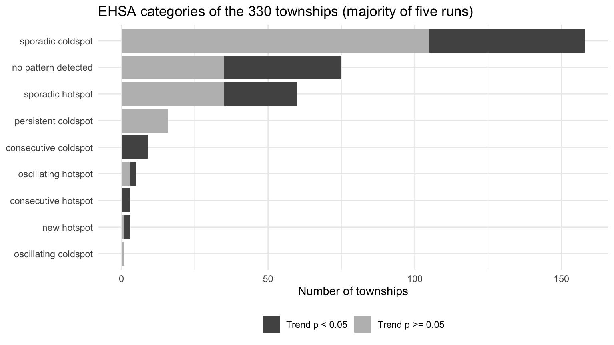
9.4 EHSA maps
ehsa_pal <- c("new hotspot" = "#67000d",
"consecutive hotspot" = "#cb181d",
"intensifying hotspot" = "#ef3b2c",
"persistent hotspot" = "#fb6a4a",
"oscillating hotspot" = "#fd8d3c",
"sporadic hotspot" = "#fdbe85",
"diminishing hotspot" = "#fee6ce",
"historical hotspot" = "#fff5eb",
"new coldspot" = "#08306b",
"consecutive coldspot" = "#2171b5",
"intensifying coldspot" = "#4292c6",
"persistent coldspot" = "#6baed6",
"oscillating coldspot" = "#9ecae1",
"sporadic coldspot" = "#c6dbef",
"diminishing coldspot" = "#deebf7",
"historical coldspot" = "#f7fbff",
"no pattern detected" = "grey85")
mmr_ehsa <- mmr_ts %>%
left_join(ehsa, by = join_by(TS_PCODE == location)) %>%
mutate(classification = factor(classification,
levels = names(ehsa_pal)) %>%
droplevels())
ehsa_sig <- mmr_ehsa %>%
filter(p_value < 0.05) %>%
mutate(classification = droplevels(classification))
# helper used in the text: townships in a class, optionally only stable ones
ts_in_class <- function(cls, min_agree = 0) {
x <- mmr_ehsa %>%
st_drop_geometry() %>%
filter(classification == cls, agreement >= min_agree) %>%
arrange(ST, TS)
if (nrow(x) == 0) return("none")
paste0(x$TS, " (", x$ST, ")", collapse = ", ")
}
n_in_class <- function(cls, min_agree = 0) {
sum(mmr_ehsa$classification == cls & mmr_ehsa$agreement >= min_agree,
na.rm = TRUE)
}The task asks for maps that only show significant results (p < 0.05). In emerging_hotspot_analysis(), p_value is the p-value of the Mann-Kendall trend test, so filtering on it keeps townships whose Gi* series has a significant trend.
tm_shape(mmr_ehsa) +
tm_polygons(fill = "white", col = "grey70", lwd = 0.3) +
tm_shape(ehsa_sig) +
tm_polygons(fill = "classification",
fill.scale = tm_scale_categorical(
values = ehsa_pal[levels(ehsa_sig$classification)]),
fill.legend = tm_legend(
title = "EHSA class\n(trend p < 0.05)",
position = tm_pos_out("right", "center")),
col = "grey60", lwd = 0.3) +
tm_title("Emerging hot spots with a significant trend")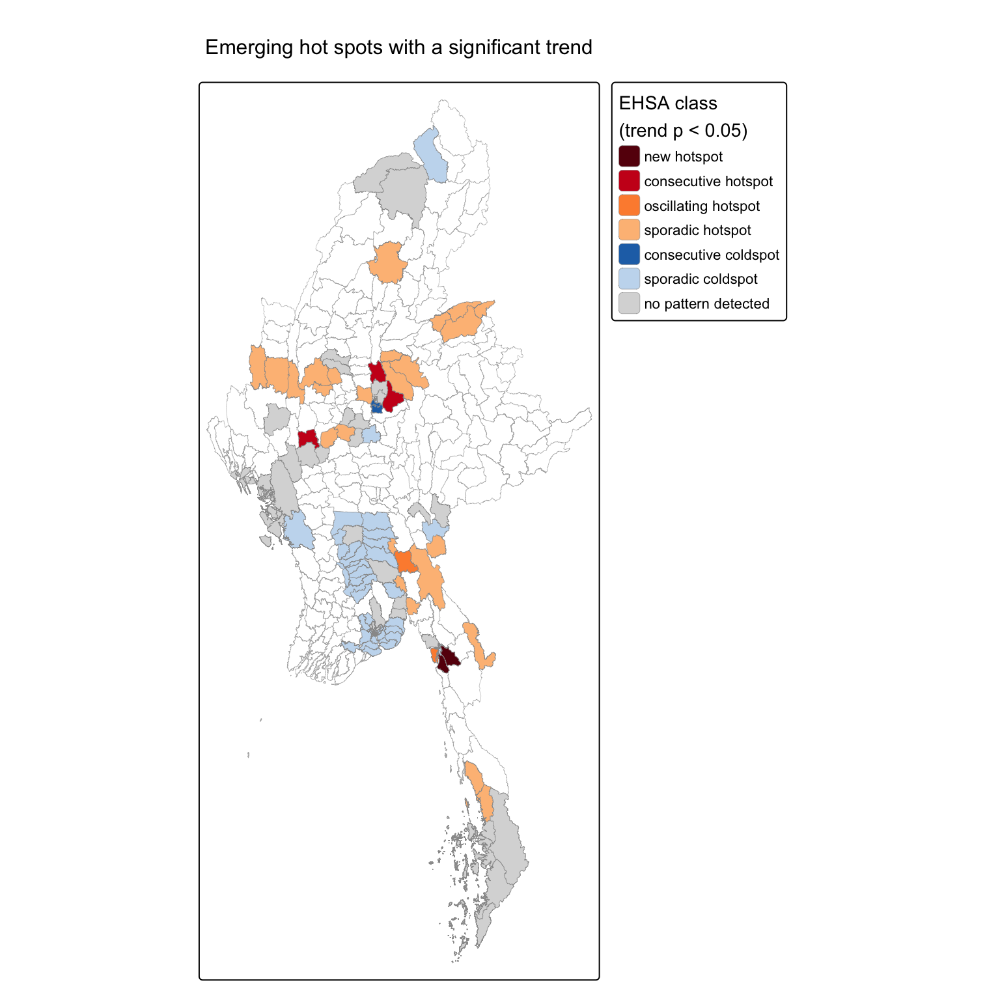
Filtering on the trend test has a side effect. Some EHSA categories are defined by having no trend. A persistent cold spot, for example, is a significant cold spot in almost every quarter without getting colder or warmer, so all 16 persistent cold spots disappear from the map above even though their status is significant quarter after quarter. To avoid hiding them, the full classification is also shown, whose categories already rely on the quarter-by-quarter Gi* significance (p < 0.01), together with how stable each township’s category is.
all_map <- tm_shape(mmr_ehsa) +
tm_polygons(fill = "classification",
fill.scale = tm_scale_categorical(
values = ehsa_pal[levels(mmr_ehsa$classification)]),
fill.legend = tm_legend(
title = "EHSA class",
position = tm_pos_in("left", "bottom")),
col = "grey60", lwd = 0.3) +
tm_title("All EHSA categories (majority of five runs)")
stab_map <- tm_shape(mmr_ehsa %>%
mutate(runs_agreeing = factor(
paste(round(agreement * 5), "of 5"),
levels = c("2 of 5", "3 of 5", "4 of 5", "5 of 5")))) +
tm_polygons(fill = "runs_agreeing",
fill.scale = tm_scale_categorical(
values = c("#d73027", "#fc8d59", "#91bfdb", "#4575b4"),
levels.drop = FALSE),
fill.legend = tm_legend(
title = "Runs giving the\nsame category",
position = tm_pos_in("left", "bottom")),
col = "grey60", lwd = 0.3) +
tm_title("Stability of the EHSA category")
tmap_arrange(all_map, stab_map, ncol = 2)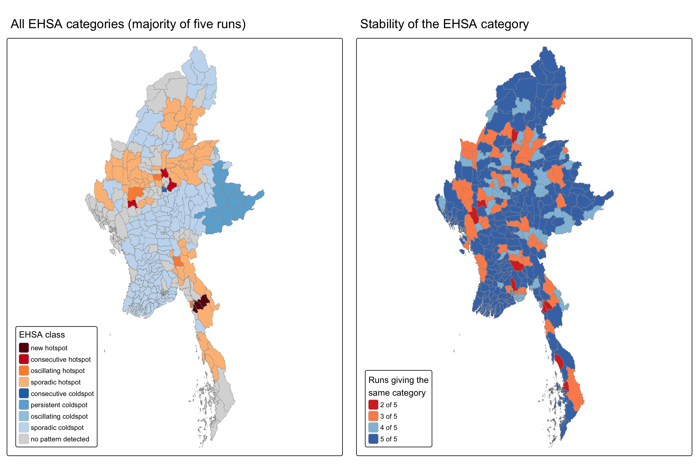
mmr_ehsa %>%
st_drop_geometry() %>%
filter(classification != "no pattern detected") %>%
count(classification, ST) %>%
arrange(classification, desc(n)) classification ST n
1 new hotspot Mon 2
2 new hotspot Kayin 1
3 consecutive hotspot Mandalay 2
4 consecutive hotspot Magway 1
5 oscillating hotspot Magway 2
6 oscillating hotspot Bago (East) 1
7 oscillating hotspot Mon 1
8 oscillating hotspot Sagaing 1
9 sporadic hotspot Sagaing 13
10 sporadic hotspot Shan (North) 13
11 sporadic hotspot Kachin 8
12 sporadic hotspot Tanintharyi 5
13 sporadic hotspot Chin 4
14 sporadic hotspot Kayin 4
15 sporadic hotspot Mandalay 4
16 sporadic hotspot Bago (East) 3
17 sporadic hotspot Kayah 3
18 sporadic hotspot Magway 2
19 sporadic hotspot Mon 1
20 consecutive coldspot Yangon 7
21 consecutive coldspot Mandalay 2
22 persistent coldspot Shan (East) 10
23 persistent coldspot Shan (North) 4
24 persistent coldspot Shan (South) 2
25 oscillating coldspot Shan (North) 1
26 sporadic coldspot Yangon 32
27 sporadic coldspot Ayeyarwady 26
28 sporadic coldspot Shan (South) 18
29 sporadic coldspot Magway 14
30 sporadic coldspot Bago (West) 13
31 sporadic coldspot Mandalay 11
32 sporadic coldspot Sagaing 10
33 sporadic coldspot Nay Pyi Taw 8
34 sporadic coldspot Bago (East) 7
35 sporadic coldspot Kachin 7
36 sporadic coldspot Shan (North) 4
37 sporadic coldspot Chin 2
38 sporadic coldspot Mon 2
39 sporadic coldspot Rakhine 2
40 sporadic coldspot Kayah 1
41 sporadic coldspot Kayin 1# direction of significant trends among sporadic hot spots
mmr_ehsa %>%
st_drop_geometry() %>%
filter(classification == "sporadic hotspot", p_value < 0.05) %>%
mutate(trend = if_else(tau > 0, "rising", "falling")) %>%
group_by(trend) %>%
summarise(townships = n(),
where = paste(sort(unique(ST)), collapse = ", "))# A tibble: 2 × 3
trend townships where
<chr> <int> <chr>
1 falling 13 Chin, Kachin, Kayah, Magway, Sagaing, Shan (North)
2 rising 12 Bago (East), Kayin, Mandalay, Mon, Shan (North), Tanintharyi9.5 What each pattern shows
9.5.1 Sporadic hot spots
There are 60 sporadic hot spots. This is the largest hot category: townships that were significant hot spots in some quarters but not in others, and never cold spots. They form the core of the war in the Sagaing and Magway Dry Zone and northern Mandalay, and extend into Chin, Kachin, Kayah, northern Shan, Kayin, Tanintharyi and eastern Bago. The intermittent pattern does not mean the violence was mild; these townships recorded the most events in the country. It means the intensity moved between neighbouring townships from quarter to quarter, so no single township stayed significantly hot all the time. The direction of the trend splits geographically. Sporadic hot spots in Sagaing, Chin, Kachin, Kayah, Gangaw in Magway and along the Chinese border in northern Shan tend to have falling Gi*, while those in eastern Bago, Kayin, Mon, Tanintharyi, Mandalay and the western edge of northern Shan (Kyaukme and Nawnghkio) have rising Gi*. In relative terms, the war’s centre of gravity has been shifting south and east.
9.5.2 Oscillating hot spots
The 5 oscillating hot spots are Kyaukkyi (Bago (East)), Myaing (Magway), Pauk (Magway), Chaungzon (Mon), Wetlet (Sagaing). They were hot in the final quarter but were significant cold spots in at least one earlier quarter, usually early in 2021 before the armed resistance spread. The Dry Zone townships in this group were cold only at the very start of the study period. Those in Mon and eastern Bago have strong positive trends and show areas that turned from relatively calm to hot during the war.
9.5.3 Consecutive and new hot spots
This group has 6 townships. Consecutive hot spots (Seikphyu (Magway), Pyinoolwin (Mandalay), Singu (Mandalay)) have an unbroken run of hot quarters at the end of the series, and new hot spots (Kawkareik (Kayin), Kyaikmaraw (Mon), Mudon (Mon)) are hot only in the final quarter. All have positive trends, and they point to the same two areas of recent escalation: northern Mandalay and Magway close to the Dry Zone, and Mon and Kayin in the south-east. However, only 1 of these townships kept the same category in at least four of the five runs, so the exact labels should be treated as indications. The regional message, recent escalation in the south-east and in northern Mandalay, is more reliable than any single township’s label.
9.5.4 Consecutive cold spots
The 9 consecutive cold spots are Amarapura (Mandalay), Sintgaing (Mandalay), Bahan (Yangon), Dawbon (Yangon), Kamaryut (Yangon), Mingalartaungnyunt (Yangon), Pazundaung (Yangon), Sanchaung (Yangon), Tamwe (Yangon). They are central Yangon townships and townships around Mandalay city, with strongly negative trends. Many other Yangon and Mandalay city townships are sporadic cold spots with similar negative trends. Yangon accounted for about 12% of conflict events in 2021 but only a small share after 2022. The pattern is consistent with the urban guerrilla campaign of 2021 being suppressed in the two largest cities, while fighting moved to the countryside.
9.5.5 Persistent cold spots
There are 16 persistent cold spots, and 16 of them keep this category in at least four of the five runs. They are cold in almost every quarter with no trend, and cover eastern Shan, the Wa areas and two townships in southern Shan: Kengtung (Shan (East)), Monghpyak (Shan (East)), Monghsat (Shan (East)), Mongkhet (Shan (East)), Mongla (Shan (East)), Mongping (Shan (East)), Mongton (Shan (East)), Mongyang (Shan (East)), Mongyawng (Shan (East)), Tachileik (Shan (East)), Matman (Shan (North)), Mongmao (Shan (North)), Narphan (Shan (North)), Pangsang (Panghkam) (Shan (North)), Mongnai (Shan (South)), Mongpan (Shan (South)). Several of these areas are governed by armed groups with long-standing ceasefires, such as the United Wa State Army and the authorities around Mongla, which may explain the low level of recorded clashes. Because they have no trend, none of them appears on the p < 0.05 map.
9.5.6 Sporadic cold spots
There are 158 sporadic cold spots. This is the largest category overall and covers most of the Ayeyarwady delta, Nay Pyi Taw, southern Shan, Bago (West), the far north of Kachin and the rest of Yangon. These townships were significant cold spots in some quarters and never hot spots. Their trends differ: Yangon townships are getting colder, while many townships in Bago (West) and eastern Bago have strong positive trends, which means they are becoming less cold as the war spreads towards them.
9.5.7 Oscillating cold spots
The only oscillating cold spot is Laukkaing (Shan (North)). It is a cold spot in the final quarter that was hot in at least one earlier quarter. Laukkaing is the main town of the Kokang area. Its hot quarters, Q4 2023 and Q1 2024, match the Operation 1027 offensive, which captured the town in January 2024, and it became a significant cold spot again in 2025. This shows how a single campaign can briefly turn a peripheral area into a hot spot.
9.5.8 No pattern detected, but a significant trend
A township is labelled “no pattern detected” when it was never a significant hot or cold spot at the strict quarterly threshold of 0.01. Some of these townships still have a significant Mann-Kendall trend, so the label alone can hide a real change.
# "no pattern detected" townships that still have a significant trend
no_pattern_trend <- mmr_ehsa %>%
st_drop_geometry() %>%
filter(classification == "no pattern detected", p_value < 0.05) %>%
mutate(trend = if_else(tau > 0, "rising", "falling"))
no_pattern_trend %>%
group_by(trend, ST) %>%
summarise(townships = n(),
names = paste(sort(TS), collapse = ", "),
.groups = "drop") %>%
arrange(trend, desc(townships))# A tibble: 14 × 4
trend ST townships names
<chr> <chr> <int> <chr>
1 falling Yangon 6 Dagon Myothit (East), Hlegu, Insein, Mingalado…
2 falling Mandalay 4 Aungmyaythazan, Chanmyathazi, Madaya, Patheing…
3 falling Sagaing 3 Nanyun, Tabayin, Ye-U
4 falling Kayah 2 Demoso, Shadaw
5 falling Bago (East) 1 Thanatpin
6 falling Chin 1 Mindat
7 falling Kachin 1 Tanai
8 falling Mon 1 Paung
9 rising Rakhine 7 Ann, Kyaukpyu, Munaung, Myebon, Pauktaw, Ramre…
10 rising Tanintharyi 5 Bokpyin, Kawthoung, Kyunsu, Myeik, Tanintharyi
11 rising Magway 3 Chauk, Salin, Sidoktaya
12 rising Mandalay 3 Mahlaing, Myingyan, Natogyi
13 rising Bago (East) 2 Kyauktaga, Waw
14 rising Bago (West) 1 Paukkhaung 21 of these townships have rising Gi* and 19 have falling Gi*. The rising group is led by Rakhine (Ann, Kyaukpyu, Munaung, Myebon, Pauktaw, Ramree, Sittwe) and Tanintharyi. Rakhine had less than 1% of the country’s events in 2021 and about 14% in 2024, after the Arakan Army offensive began in late 2023. Its Gi* rose steadily, but because fighting stayed heavy elsewhere at the same time, it rarely passed the strict quarterly threshold. The falling group is mainly outer Yangon and Mandalay city, which fits the cooling of the cities described above. For Rakhine in particular, the trend is the more useful signal.
10 Value-added analysis: does each form of violence have its own geography?
The analysis so far treats all armed conflict as one variable. For peace-building that can hide important differences: a place where armed groups fight each other needs different interventions from a place where civilians are targeted. The Local Moran’s I analysis is therefore repeated separately for each of the three event types, and their High-High clusters are compared.
lisa_type <- function(var) {
set.seed(1234)
res <- local_moran(wm_knn[[var]], wm_knn$nb, wm_knn$wt, nsim = 999)
if_else(res$p_ii_sim < 0.05, as.character(res$mean), "Insignificant")
}
va <- mmr_conflict %>%
select(TS_PCODE, ST, TS) %>%
mutate(Battles = lisa_type("battles"),
`Explosions / remote violence` = lisa_type("explosions"),
`Violence against civilians` = lisa_type("vac"))
va_long <- va %>%
pivot_longer(c(Battles, `Explosions / remote violence`,
`Violence against civilians`),
names_to = "type", values_to = "cluster") %>%
mutate(cluster = factor(cluster,
levels = c("Insignificant", "Low-Low", "Low-High",
"High-Low", "High-High")))
va_long %>% st_drop_geometry() %>% count(type, cluster) %>%
pivot_wider(names_from = cluster, values_from = n, values_fill = 0)# A tibble: 3 × 6
type Insignificant `Low-Low` `Low-High` `High-High` `High-Low`
<chr> <int> <int> <int> <int> <int>
1 Battles 195 97 3 35 0
2 Explosions / remote… 224 72 6 28 0
3 Violence against ci… 239 53 4 33 1tm_shape(va_long) +
tm_polygons(fill = "cluster",
fill.scale = tm_scale_categorical(
values = c("grey90", "#2c7bb6", "#abd9e9",
"#fdae61", "#d7191c"),
levels.drop = FALSE),
fill.legend = tm_legend(title = "LISA cluster (p < 0.05)"),
col = "grey60", lwd = 0.2) +
tm_facets_wrap(by = "type", nrow = 1)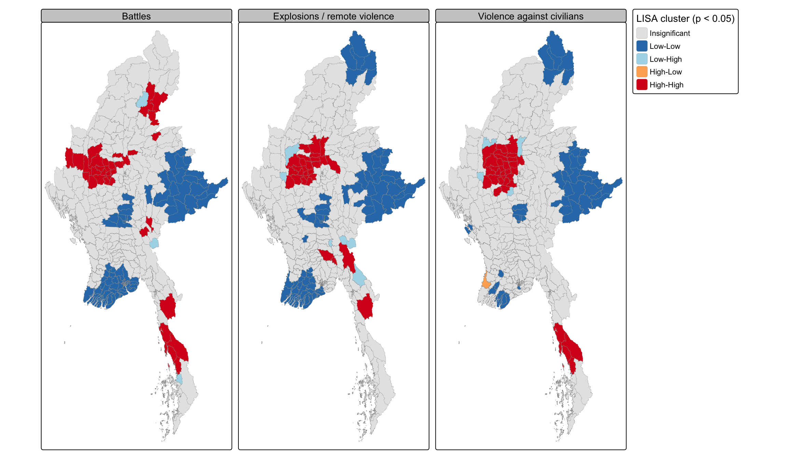
hh <- va %>%
st_drop_geometry() %>%
mutate(across(c(Battles, `Explosions / remote violence`,
`Violence against civilians`), ~ .x == "High-High"))
hh_pattern <- hh %>%
mutate(pattern = case_when(
Battles & `Explosions / remote violence` & `Violence against civilians` ~
"All three types",
`Violence against civilians` & !Battles & !`Explosions / remote violence` ~
"Violence against civilians only",
Battles & !`Explosions / remote violence` & !`Violence against civilians` ~
"Battles only",
`Explosions / remote violence` & !Battles & !`Violence against civilians` ~
"Explosions / remote violence only",
Battles | `Explosions / remote violence` | `Violence against civilians` ~
"Two of the three types",
TRUE ~ "Not High-High"))
hh_pattern %>% count(pattern) pattern n
1 All three types 17
2 Battles only 11
3 Explosions / remote violence only 5
4 Not High-High 280
5 Two of the three types 12
6 Violence against civilians only 5hh_pattern %>%
filter(str_detect(pattern, "only")) %>%
select(pattern, ST, TS) %>%
arrange(pattern, ST) pattern ST TS
1 Battles only Chin Hakha
2 Battles only Chin Thantlang
3 Battles only Kachin Myitkyina
4 Battles only Kachin Waingmaw
5 Battles only Kachin Momauk
6 Battles only Kayah Loikaw
7 Battles only Kayah Hpruso
8 Battles only Magway Gangaw
9 Battles only Magway Tilin
10 Battles only Mandalay Mogoke
11 Battles only Shan (North) Namhkan
12 Explosions / remote violence only Bago (East) Nyaunglebin
13 Explosions / remote violence only Bago (East) Kyauktaga
14 Explosions / remote violence only Kayin Hpapun
15 Explosions / remote violence only Mandalay Thabeikkyin
16 Explosions / remote violence only Shan (North) Nawnghkio
17 Violence against civilians only Mandalay Taungtha
18 Violence against civilians only Mandalay Natogyi
19 Violence against civilians only Mandalay Nyaung-U
20 Violence against civilians only Sagaing Sagaing
21 Violence against civilians only Sagaing Ye-Uva_map_data <- mmr_ts %>%
select(TS_PCODE) %>%
left_join(hh_pattern %>% select(TS_PCODE, pattern), by = "TS_PCODE") %>%
mutate(pattern = factor(pattern,
levels = c("Not High-High", "All three types",
"Two of the three types",
"Battles only",
"Explosions / remote violence only",
"Violence against civilians only")))
tm_shape(va_map_data) +
tm_polygons(fill = "pattern",
fill.scale = tm_scale_categorical(
values = c("grey92", "#67000d", "#ef6548",
"#4d9221", "#fdae61", "#762a83")),
fill.legend = tm_legend(
title = "High-High cluster for...",
position = tm_pos_out("right", "center")),
col = "grey60", lwd = 0.3) +
tm_title("Which forms of violence cluster where")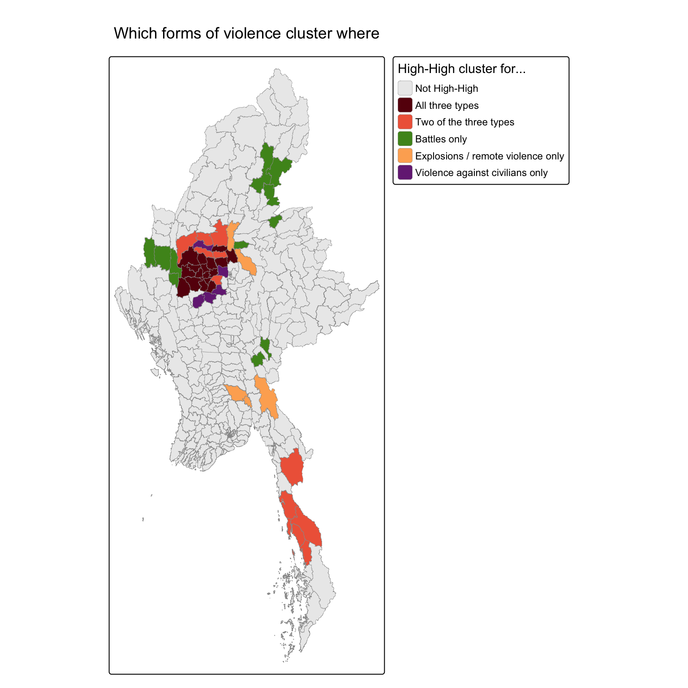
The three types are strongly correlated at township level, and 17 townships are High-High clusters for all three. These form the shared core of the war in Sagaing and Magway. Outside this core, each form of violence has its own geography:
- Battles only: High-High clusters in Kachin (Myitkyina, Waingmaw, Momauk), Kayah (Loikaw, Hpruso), Chin (Hakha, Thantlang), Gangaw and Tilin on the western edge of the Dry Zone, Mogoke in northern Mandalay and Namhkan on the Chinese border. These are the frontlines between the military and armed organisations that hold territory.
- Explosions and remote violence only: Hpapun in Kayin, Nyaunglebin and Kyauktaga in eastern Bago, Thabeikkyin and Nawnghkio. Air strikes and shelling here are not matched by the same density of ground clashes, which is consistent with the military using remote attacks on areas it does not control on the ground.
- Violence against civilians only: a small group of Dry Zone townships (Sagaing, Ye-U, Taungtha, Natogyi, Nyaung-U). These are on the edges of the main battle area, close to military-held towns, where civilians are targeted even though large clashes are less frequent.
One result does not fit any of these groups. Pathein, the capital of Ayeyarwady Region, is a High-Low outlier for violence against civilians: it recorded 38 such events while its delta neighbours recorded between 0 and 16. Attacks on civilians in a regional capital, away from any frontline, are a reminder that this form of violence is not limited to battle areas.
For peace-building this matters. A ceasefire negotiated between armed parties addresses the battle clusters, but would do little for the townships where violence against civilians clusters without matching battles. Those areas need civilian protection, monitoring and humanitarian access. The analysis has limits: the type-specific counts are smaller and therefore noisier, and ACLED’s assignment of an event to one type is a simplification of events that often mix fighting and attacks on civilians.
11 Robustness: does the choice of neighbourhood matter?
The 6-nearest-neighbour weights are a choice, so Local Moran’s I is re-run with k = 4, 8 and 10, and the High-High clusters are compared with the k = 6 result.
hh_k6 <- lisa$TS_PCODE[lisa$LISA_cluster == "High-High"]
map_dfr(c(4, 6, 8, 10), function(k) {
wk <- mmr_conflict %>%
mutate(nb = st_knn(geometry, k = k),
wt = st_weights(nb, style = "W"))
set.seed(1234)
res <- local_moran(wk$events, wk$nb, wk$wt, nsim = 999)
sig <- res$p_ii_sim < 0.05
hh <- wk$TS_PCODE[sig & res$mean == "High-High"]
tibble(k = k,
high_high = length(hh),
low_low = sum(sig & res$mean == "Low-Low"),
outliers = sum(sig & res$mean %in% c("Low-High", "High-Low")),
shared_hh_with_k6 = length(intersect(hh, hh_k6)))
})# A tibble: 4 × 5
k high_high low_low outliers shared_hh_with_k6
<dbl> <int> <int> <int> <int>
1 4 29 57 3 26
2 6 34 74 3 34
3 8 35 72 8 31
4 10 38 85 12 30The number of High-High townships changes only modestly with k, and most of the k = 6 hot cluster is found again under every setting. Larger neighbourhoods find somewhat more Low-Low townships and more outliers, as expected when each township is compared with a wider area. The main conclusion, a dominant Dry Zone cluster and a smaller south-eastern one, does not depend on the choice of k.
12 Integrated findings and discussion
The three analyses fit together. The global Moran’s I shows that armed conflict in Myanmar is strongly spatially clustered. Local Moran’s I and Gi* locate the clustering: a large hot area in the Sagaing, Magway and western Mandalay Dry Zone, a second one in Kayin and Tanintharyi, and cold areas in the Ayeyarwady delta, Yangon, Nay Pyi Taw and eastern Shan. EHSA adds the time dimension. The Dry Zone has been hot throughout but in a shifting, sporadic way, and its prominence relative to the rest of the country has been falling as the war spread. Mon, eastern Bago, Kayin and northern Mandalay have become hot more recently. Rakhine shows significant rising trends even though the strict quarterly threshold labels most of its townships “no pattern detected”. Yangon and Mandalay city have cooled steadily since 2021.
Several methodological points affected the results and are worth stating. The analytical p-values of Local Moran’s I find far fewer significant Low-Low townships than the permutation p-values, because the counts are very skewed. sfdep’s built-in labels would have mislabelled some Gi* hot spots as cold and, without sorting the boundaries, would have attached EHSA classes to the wrong townships. None of these problems produces an error message, so each had to be checked by hand. Finally, the EHSA categories are less certain than they look: with 99 simulations the per-quarter significance sits at the smallest possible p-value, and a single run puts about one township in five into a different category from another run. The broad regional picture is stable; individual labels in the small categories are not.
There are other explanations to keep in mind. Event counts depend on reporting, and ACLED relies on media and local partners. Areas with poor communications or tight military control may be under-reported, which could make some cold spots look calmer than they are. Large townships may count more events simply because of their area. And the ceasefire areas of eastern Shan are cold because of political arrangements, not because they are safe from violence of every kind.
13 Implications for peace-building
The results point to where peace-building and humanitarian effort could be focused, though they show where violence has been recorded rather than why.
- Sustained support for the Dry Zone. Sagaing, Magway and western Mandalay form the largest and most persistent hot area. The sporadic pattern shows that violence moves between neighbouring townships, so protection and relief planning should cover the cluster as a whole rather than chase individual townships.
- Early attention to emerging areas. The new, consecutive and oscillating hot spots in Mon, Kayin, eastern Bago and northern Mandalay, together with the rising trends in Rakhine, are where conflict has intensified most recently. Monitoring, preparedness for displacement and community-level mediation are most likely to help where the escalation is still recent. Because the exact EHSA labels of these townships are not fully stable, targeting should work at the level of these areas rather than single townships.
- Different tools for different violence. The value-added analysis shows that battles, remote violence and violence against civilians do not always cluster in the same places. Ceasefire negotiation is relevant on battle frontlines (Kachin, Kayah, Chin), while townships where violence against civilians clusters on its own need civilian protection and documentation.
- Learning from cold areas, with caution. The persistent cold spots in eastern Shan and the cooled townships of Yangon are not necessarily peaceful. They may reflect ceasefires, military control or under-reporting. They can still offer lessons and humanitarian corridors, but need ground truthing before being treated as safe.
What the analysis supports directly is the location and timing of recorded violence. Deciding on specific interventions needs additional information: population and displacement figures, control of territory, and the views of local communities.
14 Limitations
ACLED is the most detailed conflict dataset available for Myanmar, but it records reported events. Under-reporting is likely in remote or tightly controlled areas, and the fatality figures are estimates. Events with low geographic precision were removed, and the 1:250,000 boundaries required eight near-shore events to be assigned to their nearest township. The analysis uses raw counts, which favour larger townships because no reliable population data exist for the period. The results depend on the 6-nearest-neighbour weights; section 11 shows they are stable for k between 4 and 10, but other weighting schemes could shift individual townships. The EHSA uses quarterly data and a significance threshold of 0.01 per quarter, which is also the floor of the permutation p-value with 99 simulations; this makes individual categories unstable between runs, which taking the majority of five runs reduces but does not remove. A different time interval or more simulations could reclassify borderline townships. Gi* trends are relative to each quarter’s national picture, so a falling trend does not necessarily mean less violence. Finally, LMSA and EHSA describe spatial and temporal patterns. They cannot establish what causes the violence.
15 References
- ACLED (2025). Armed Conflict Location & Event Data Project: Myanmar, January 2021 to September 2025. Provided via eLearn.
- MIMU (2023). Myanmar Township Boundaries MIMU v9.4. Myanmar Information Management Unit GeoNode.
- Anselin, L. (1995). Local indicators of spatial association: LISA. Geographical Analysis, 27(2), 93 to 115.
- Ord, J. K., & Getis, A. (1995). Local spatial autocorrelation statistics: distributional issues and an application. Geographical Analysis, 27(4), 286 to 306.
- Parry, J., & Locke, D. (2024). sfdep: Spatial Dependence for Simple Features. R package version 0.2.5.
- Kam, T. S. R for Geospatial Data Science and Analytics, Chapters 8 to 11. https://r4gdsa.netlify.app/